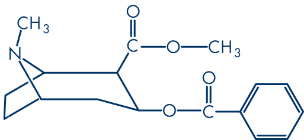

Gloria Santos
As a long-term substance abuser, Santos has tried it all. She says heroin in particular allowed her to escape reality.
Listen to Santos describe her battle with addiction below.
"The drugs I used were… Everything. They call that a garbage head junkie."
Crack
| Street Price |
|---|
| $60-100 per gram of powder (Cocaine) |
| Addictiveness Potential |
| 2.39 |
Usage Rates
In 2014, rates nationally among high schoolers was at 1.1 percent, combining rates of crack cocaine (0.4) and powder cocaine (0.7).
Origin/Synthesis
Cocaine was first isolated (extracted from leaves) in 1859 by German chemist Albert Niemann. In 1886 the popularity of the drug got a further boost when John Pemberton included coca leaves as an ingredient in his new soft drink, Coca-Cola. Public pressure later forced the Coca-Cola Company to remove the cocaine from the soft drink in 1903. In 1912 the United States government reported 5,000 cocaine-related deaths in one year, and by 1922 the drug was officially banned.
As early as 1980, reports of crack, a rocky form of cocaine that can be smoked. The biggest surge in the use of the drug occurred during the "Crack Epidemic," between 1984 and 1990, when the drug spread across American cities.
In 1985 the number of people who admitted using cocaine on a routine basis increased from 4.2 million to 5.8 million. As of 2008 cocaine had become the second most trafficked illegal drug in the world.
Highs and Lows
Highs
Physical
- Strong central nervous system stimulant
- Increases levels of neurotransmitter dopamine in brain circuits regulating pleasure and movement
- Prevents the dopamine from being recycled, causing excessive amounts to build up the synapse
- reduces altitude sickness
Mental
- Mood lift
- Euphoria
- Increased sociability
- Reduced physical fatigue
- Increased sexual thoughts
Lows
Physical
- Decreased coordination
- Nausea, vomitting
- Slurring speech
- Drowsiness, sleepiness
- Nystagumus (twitching eyes)
- Frequent urination
- Erectile dysfuntion
- Blackouts
- Brain and liver damage
- Coma and death at extreme dosages
- Hangover
- Fetal damage
Mental
- Emotional volatility
- Decreased ability to reconize own impairment
- Confusion